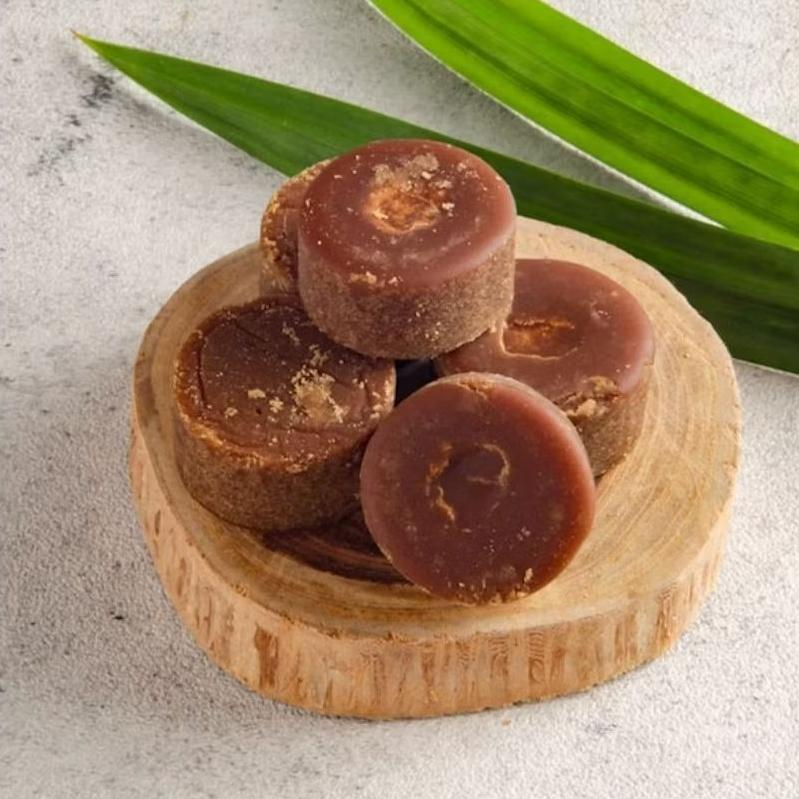
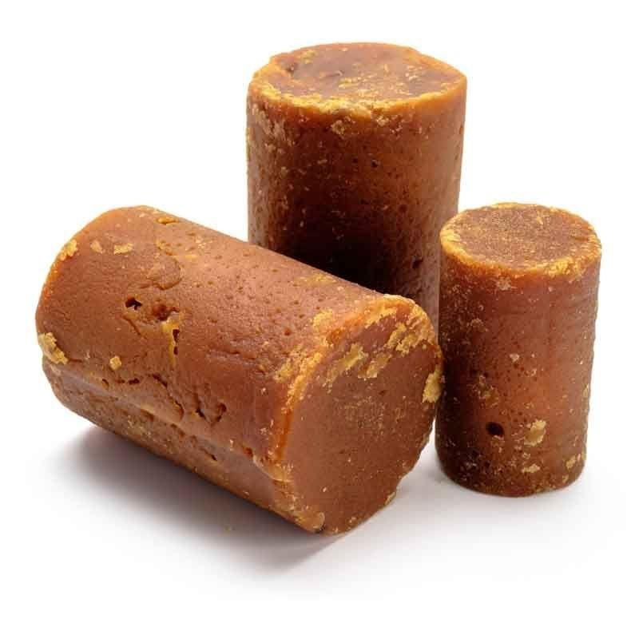
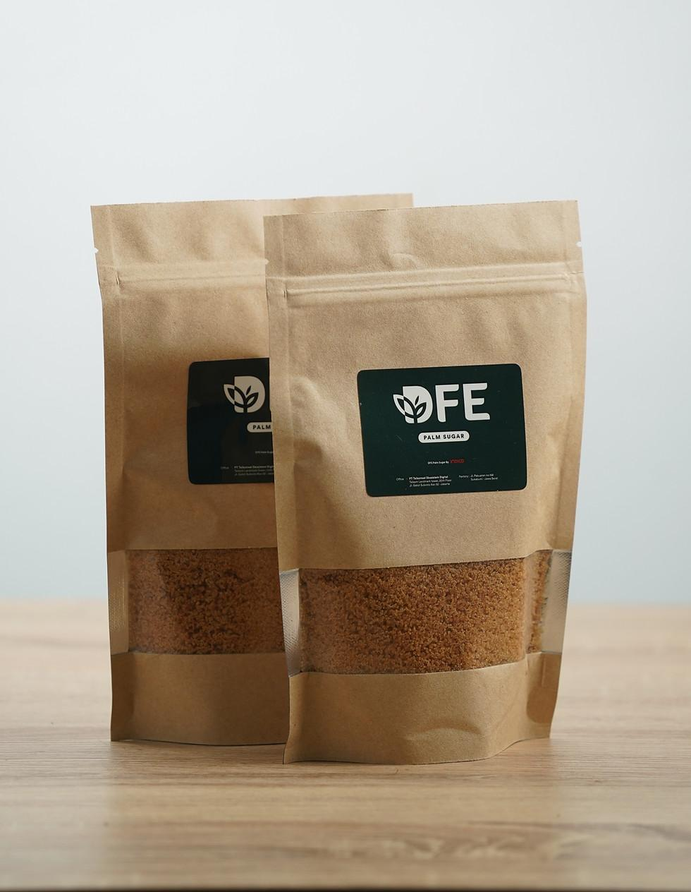

Gula Aren Cetak
Gula aren berbentuk cetakan untuk minuman, kue, dan masakan.
Rp15.000 / 250 gram
Lihat DetailKatalog Gula Merah Sulawesi Barat
Pilihan gula merah dan produk olahan aren dengan tema potensi lokal Sulawesi Barat.

Gula aren berbentuk cetakan untuk minuman, kue, dan masakan.
Rp15.000 / 250 gram
Lihat Detail
Pemanis tradisional untuk aneka hidangan dan jajanan Nusantara.
Rp12.000 / 250 gram
Lihat Detail
Gula aren berbentuk butiran yang praktis untuk ditakar dan dicampurkan.
Rp20.000 / 250 gram
Lihat DetailPemanis cair untuk kopi, minuman dingin, dan kreasi kuliner.
Rp25.000 / 250 ml
Lihat Detail